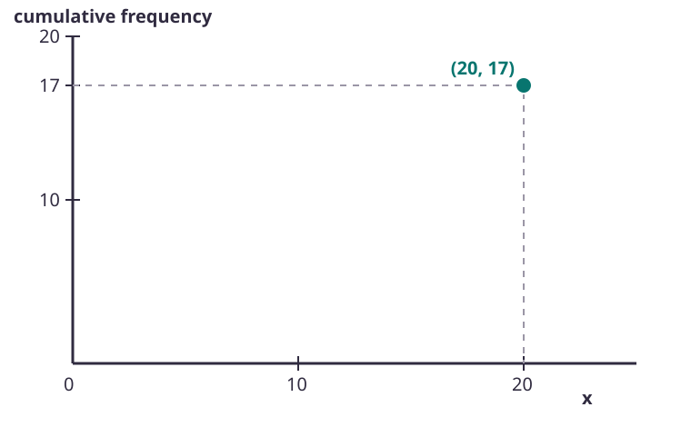
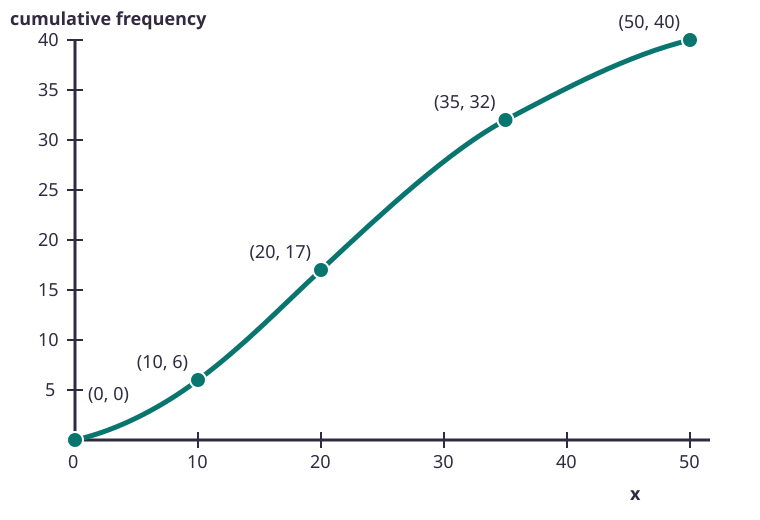
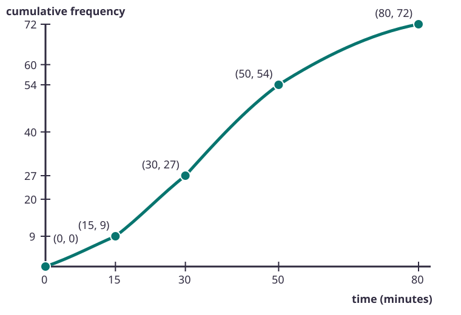
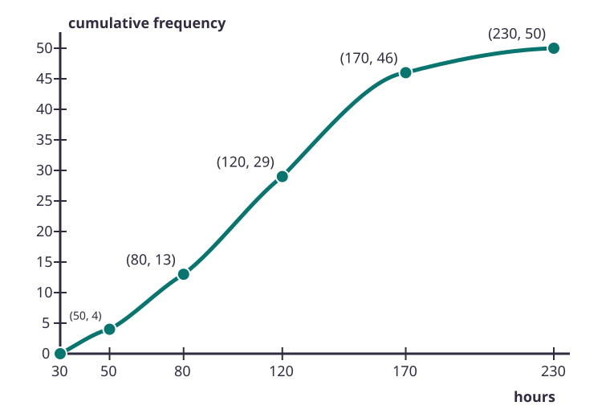

Worked example
Continue the running total
| Frequency | 4 | 7 | 9 | 5 |
|---|---|---|---|---|
| Running total | 4 | 11 | 20 | 25 |
- Start with 4.
- Add 7: .
- Add 9: .
- Add 5: .
The final cumulative frequency is 25.
A frequency tells you how many values lie in one class. A running total tells you how many lie up to that point. Plot those totals at the class boundaries and the growing pattern becomes a curve.
| Frequency | 4 | 7 | 9 | 5 |
|---|---|---|---|---|
| Running total | 4 | 11 | 20 | 25 |
The final cumulative frequency is 25.
The frequencies are 3, 6 and 4. The first two running totals are 3 and 9.
Choose A or B.

For the class , cumulative frequency is 21.
Choose A or B.
The classes have unequal widths. Pair each running total with its own upper boundary.
| Class | 0 ≤ x < 10 | 10 ≤ x < 20 | 20 ≤ x < 35 | 35 ≤ x < 50 |
|---|---|---|---|---|
| Frequency | 6 | 11 | 15 | 8 |

The final cumulative frequency 40 matches 6 + 11 + 15 + 8 = 40.
| Recorded class | 5–9 | 10–19 | 20–29 | 30–44 |
|---|---|---|---|---|
| Upper boundary | 9.5 | 19.5 | 29.5 | 44.5 |
| Recorded class | 5–9 | 10–19 | 20–29 | 30–44 |
|---|---|---|---|---|
| Frequency | 5 | 9 | 12 | 4 |
Boundaries first. Running totals second. Points third.
Cumulative frequencies 9, 27, 54 and 72 occur at upper boundaries 15, 30, 50 and 80 minutes.

| Time, t | 0 ≤ t < 5 | 5 ≤ t < 15 | 15 ≤ t < 30 | 30 ≤ t < 50 | 50 ≤ t < 70 |
|---|---|---|---|---|---|
| Frequency | 7 | 13 | 18 | 10 | 2 |
Add first, then plot at upper boundaries.
The first class starts at 30 hours.

Start at the true lower boundary with cumulative frequency zero.
Accumulate, pair, plot, label and join.